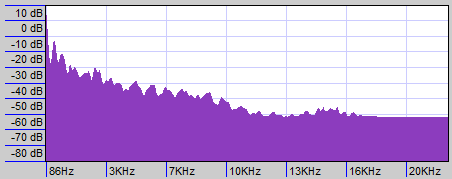

| In this example the listener is placed in an adjacent room to the sound source. Diffraction is turned off, so only specular paths that bounce off of the walls in the other room at the correct angle can make it into this room. | Here is another shot of the reflected rays converging at the listener's ears. Note that there is one transmission path that makes it through the wall |
| Click below to play the sound |
Here is a snapshot of the sound's spectrum |
| Note how now in addition to all of the specular and transmissive paths that make it through, there is also one diffraction path that contributes (circled in blue). | Here is another shot of the reflected rays converging at the listener's ears. The diffraction bend is clearly visible here |
| Click below to play the sound | Here is a snapshot of the sound's spectrum. Note the overall higher energy content, especially in the high frequencies. |
| Here's a snapshot from the point of view of the listener. Notice how many more valid specular paths exist between the sound source and the listener. | This shot shows all of the rays converging at the listener's left ear. | This shot shows how a few of the specular paths bounced behind the listener into the other room and back again |
| Click below to play the sound |
| Here's an example where the listener is to the left of the sound source. Click below to hear it |
Here is an example where the listener is to the right of the sound source. Click below ot hear it |
| Here's a snapshot from the point of view of the listener. Note the source off in the distance. | This shot from above shows all of the rays converging at the listener's left ear |
| Click below to play the sound |
|
|
| Here's a snapshot from the point of view of the listener. I threw a car model in there for fun | This shot from above shows all of the specular rays converging at the listener's left ear. The source and listener are much closer to each other; I actually had to circle them. |
| Click below to play the sound |
| A shot showing how high up the listener is | A shot looking down. The car in perspective helps to emphasize how high up we are | A shot of all of the rays |
| Click below to play the sound |
Standing outside of the car. The sound is extremely muffled but the bass comes through well, which is the effect we were going for. The spectrum plot verifies this analytically

|
Inside of the car; lots of reverberation in a small space and much crisper sound because not only does a direct path exist, but the reflection coefficients don't damp as much of the high frequencies as the transmission coefficients in this example.
 |
Listener is placed at one focus and source is placed at the other focus. Tons and tons of paths are found that converge, which makes sense because technically every single path on the spherical wavefront should converge here. Note that this is a piecewise constant mesh approximation to an actual ellipsoid so there is some error.
Notice how almost all of the rays focus at one time (which makes sense if they all travel from one focus to the other). This means we hear almost no reverberation; the sound carries almost perfectly from one focus to the other (this is why it's called a whisper chamber; because someone can whisper from one focus to another with very little energy loss; but people who aren't standing at the focus can't hear it as well). The focal length is about 14.14 meters, so the wavefront had to travel a distance of 28.28 meters in all directions. If sound goes at 343 m/second, then they should all converge after about 0.082 seconds. This is roughly the time of convergence we see above (NOTE there is error because of inexact placement and the piecewise constant mesh approximation). |
The listener is no longer at a focus, nor is the sound source, so the impulses are spread out more over time. We also get a more interesting pattern that doesn't sound much like any room we've experienced before.
|